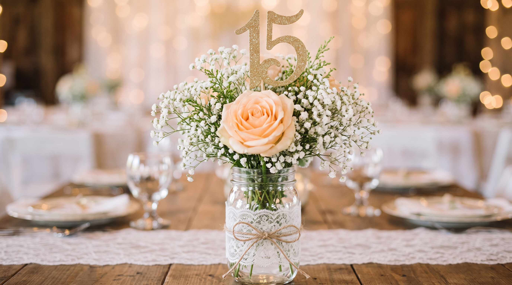

¡Gracias! "Todos quedamos encantados con el trabajo que realizo la floristeria el Jardín de Lulú. Queriamos una decoración delicada, romantica y juvenil para nuestra pequeña y eso encontramos en los centros de mesa, con una bellas rosas que generaban un aspecto de cuento de hadas".
Con el mayor cariño de todos le agradecemos la Familia Mendoza